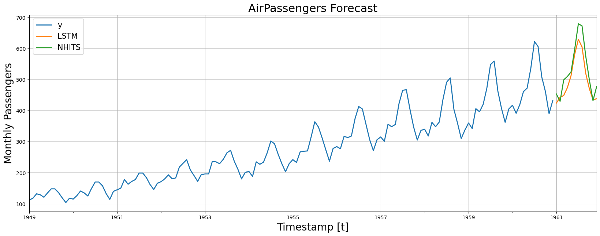

!pip install neuralforecast• Getting Started
This notebook provides an example on how to start using the main functionalities of the NeuralForecast library. The NeuralForecast class allows users to easily interact with NeuralForecast.models PyTorch models. In this example we will forecast AirPassengers data with a classic LSTM and the recent NHITS models. The full list of available models is available here.
You can run these experiments using GPU with Google Colab.

1. Installing NeuralForecast
import numpy as np
import pandas as pd
from IPython.display import display, Markdown
import matplotlib.pyplot as plt
from neuralforecast import NeuralForecast
from neuralforecast.models import LSTM, NHITS, RNN
from neuralforecast.utils import AirPassengersDF2. Loading AirPassengers Data
The core.NeuralForecast class contains shared, fit, predict and other methods that take as inputs pandas DataFrames with columns ['unique_id', 'ds', 'y'], where unique_id identifies individual time series from the dataset, ds is the date, and y is the target variable.
In this example dataset consists of a set of a single series, but you can easily fit your model to larger datasets in long format.
Y_df = AirPassengersDF # Defined in neuralforecast.utils
Y_df.head()| unique_id | ds | y | |
|---|---|---|---|
| 0 | 1.0 | 1949-01-31 | 112.0 |
| 1 | 1.0 | 1949-02-28 | 118.0 |
| 2 | 1.0 | 1949-03-31 | 132.0 |
| 3 | 1.0 | 1949-04-30 | 129.0 |
| 4 | 1.0 | 1949-05-31 | 121.0 |
Important
DataFrames must include all ['unique_id', 'ds', 'y'] columns. Make sure y column does not have missing or non-numeric values.
3. Model Training
Fit the models
Using the NeuralForecast.fit method you can train a set of models to your dataset. You can define the forecasting horizon (12 in this example), and modify the hyperparameters of the model. For example, for the LSTM we changed the default hidden size for both encoder and decoders.
horizon = 12
# Try different hyperparmeters to improve accuracy.
models = [LSTM(h=horizon, # Forecast horizon
max_epochs=500, # Number of epochs to train
scaler_type='standard', # Type of scaler to normalize data
encoder_hidden_size=64, # Defines the size of the hidden state of the LSTM
decoder_hidden_size=64,), # Defines the number of hidden units of each layer of the MLP decoder
NHITS(h=horizon, # Forecast horizon
input_size=2 * horizon, # Length of input sequence
max_epochs=100, # Number of epochs to train
n_freq_downsample=[2, 1, 1]) # Downsampling factors for each stack output
]
fcst = NeuralForecast(models=models, freq='M')
fcst.fit(df=Y_df)Predict using the fitted models
Using the NeuralForecast.predict method you can obtain the h forecasts after the training data Y_df.
Y_hat_df = fcst.predict()Predicting DataLoader 0: 100%|██████████| 1/1 [00:00<00:00, 50.58it/s]
Predicting DataLoader 0: 100%|██████████| 1/1 [00:00<00:00, 126.52it/s]The NeuralForecast.predict method returns a DataFrame with the forecasts for each unique_id, ds, and model.
Y_hat_df = Y_hat_df.reset_index()
Y_hat_df.head()| unique_id | ds | LSTM | NHITS | |
|---|---|---|---|---|
| 0 | 1.0 | 1961-01-31 | 424.380310 | 453.039185 |
| 1 | 1.0 | 1961-02-28 | 442.092010 | 429.609192 |
| 2 | 1.0 | 1961-03-31 | 448.555664 | 498.796204 |
| 3 | 1.0 | 1961-04-30 | 473.586609 | 509.536224 |
| 4 | 1.0 | 1961-05-31 | 512.466370 | 524.131592 |
4. Plot Predictions
Finally, we plot the forecasts of both models againts the real values.
fig, ax = plt.subplots(1, 1, figsize = (20, 7))
plot_df = pd.concat([Y_df, Y_hat_df]).set_index('ds') # Concatenate the train and forecast dataframes
plot_df[['y', 'LSTM', 'NHITS']].plot(ax=ax, linewidth=2)
ax.set_title('AirPassengers Forecast', fontsize=22)
ax.set_ylabel('Monthly Passengers', fontsize=20)
ax.set_xlabel('Timestamp [t]', fontsize=20)
ax.legend(prop={'size': 15})
ax.grid()
References
- Boris N. Oreshkin, Dmitri Carpov, Nicolas Chapados, Yoshua Bengio (2020). “N-BEATS: Neural basis expansion analysis for interpretable time series forecasting”. International Conference on Learning Representations.
- Cristian Challu, Kin G. Olivares, Boris N. Oreshkin, Federico Garza, Max Mergenthaler-Canseco, Artur Dubrawski (2021). “N-HiTS: Neural Hierarchical Interpolation for Time Series Forecasting”. Work in progress paper, submitted to AAAI.